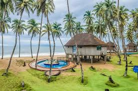

Heritage Sites
Kudan Heritage CentreAbout the Anchau Internatinal Hotel and Toursim Centre. History of Kudan CentreResidents of Kaduna metropolis and environs flock to Anchau International Hotel and Tourism Center on Saturdays and Sundays to relax and unwind with their families after a long week of work and school. The crowd which is mostly made of young men and women, families and singles all of whom throng to Kofar Gamji for various reasons, fuse at the arena. Kofar Gamji also known as Hassan Usman Katsina Park, is the first amusement park built in the heart of the Kaduna metropolis along the Shooting Range New Extension next to the Kaduna Police College and is indeed the most visited place during celebrations such as Valentine’s Day, Christmas, Sallah and New Year.The premises which started off as a garden during colonial rule and northern administrations, occupies a landmass of about 7, 000 square metres and has beautiful greenery with several trees, a small mangrove, orchards and small islands with majestic water flowing from the River Kaduna.The park is divided into two by the river with a foot bridge built by Lord Frederick Lugard connecting them together. Until the bridge was constructed there was no way of linking both halves except by canoe. Kofar Gamji park has a wide lawn for relaxation, a mini zoo housing animals including a lion, two hyena’s, four monkeys, two ostriches, a tortoise, peacocks, a children’s playground that is managed by a private company and a terrace for couples who chose to stroll hand-in-hand, also known as the Lord Lugard foot bridge. The bridge is also a popular backdrop for wedding couples who love to have their photos taken there.The scenic view of the Kaduna River, which cuts across the park, is a pleasure to behold even though, the river often over flows its banks during the raining season - forcing the management of the park to close it until the water level recedes.. |
 |